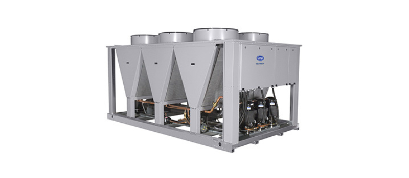
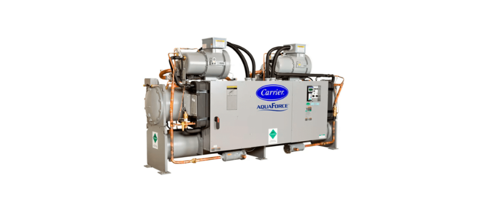
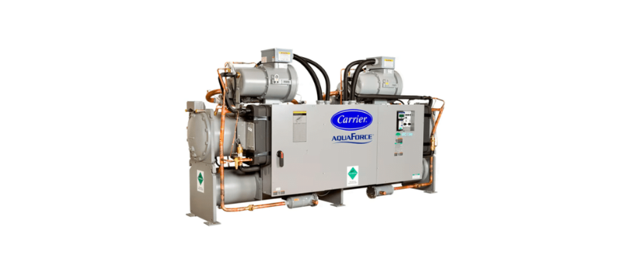
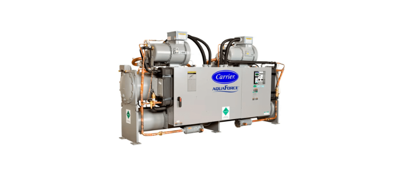
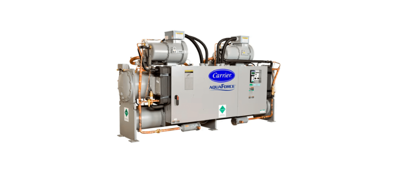

Bienvenidos
Expertos en soluciones de chiller para mantener tus instalaciones en la temperatura óptima.

.png) 


Expertos en soluciones de chiller para mantener tus instalaciones en la temperatura óptima.

Somos líderes en la industria de enfriamiento, especializados en soluciones de chiller confiables y eficientes para empresas de todos los tamaños.
.png)
Es un equipo de enfriamiento por medio de aire o agua para poder mantener una temperatura específica en procesos de la industria.
Los tipos de chillers más comunes son los que cuentan con condensador enfriado por aire o condensador enfriado por agua.
.png)
Ofrecemos renta de chillers con diferentes capacidades según tus necesidades.

Chillers de alta calidad, enfriados por agua o aire para cualquier aplicación.
Servicio preventivo y correctivo para asegurar el óptimo funcionamiento de tus equipos.
Correo Electrónico: info: dnieto32@yahoo.com.mx
Correo Electrónico: info: huitronblanca63@gmail.com
Teléfono: +52 (81)31337581
Teléfono Alternativo: +52 (81)17595843
Ubicación: Monterrey, Nuevo León, México